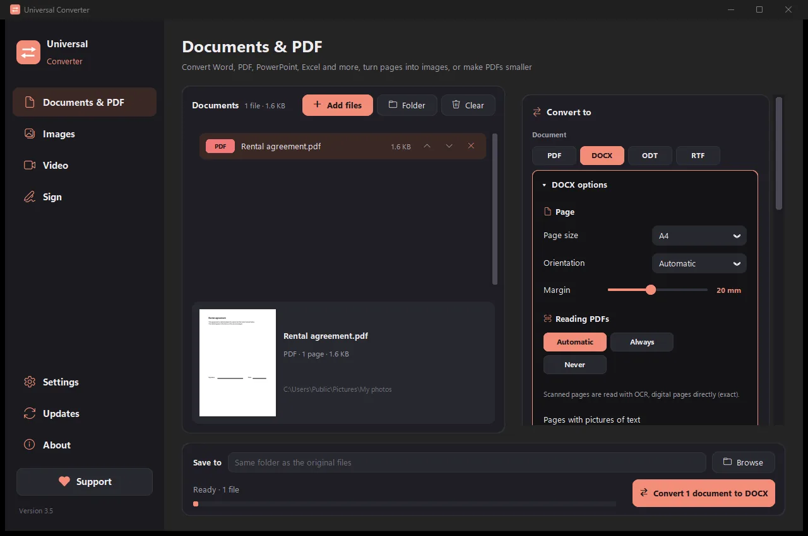

Compress a PDF to 100 KB, 200 KB or any size for online forms
Job, exam, university and government websites often accept only PDFs under 100 KB, 200 KB or 500 KB. Type the size the form allows and Universal Converter shrinks the pictures inside the PDF until it fits, on your own computer or phone, without uploading your documents anywhere. If the pages can't get that small, you get the smallest version and the app tells you.
How to install and update
- Open the downloaded .dmg and drag Universal Converter into Applications.
- Open the app. The first time, macOS blocks it because it isn't signed by Apple: click Done.
- Open System Settings > Privacy & Security, scroll down, click Open Anyway and enter your password. You only do this once.
Updates: if you allow it when the app first opens, it checks for new versions each time it starts, verifies their digital signature and installs them when you choose.
How to install and update
- Tap Download for Android on your phone.
- Open the downloaded file. If Android asks, allow your browser or file manager to install apps.
- Tap Install.
Updates: the app checks about once a day and tells you when a new version is ready. Download it the same way and install it over the old one; your settings are kept.
How to do it
- Open Universal Converter and choose Documents & PDF on the left.
- Drag your files or a whole folder into the window, or click Add files.
- Choose PDF under Convert to, turn on Compress PDF and enter the size the form allows, for example 100 KB.
- Click Convert. The new files are saved next to the originals, or in the folder you choose.

Why do it offline?
Universal Converter does the work on your own device. Your files stay private, big files are no problem, and it works without an internet connection.
More things it can do
- Convert a PDF to Word
- Convert Word documents to PDF
- Combine several files into one PDF
- Compress a PDF to a size you choose
- Convert PDF pages to JPG images
- Turn a scanned document into an editable Word file
- Convert pictures between JPG, PNG, WEBP and more
- Resize pictures or shrink them to a file size
- Resize a photo or signature to 20 KB, 50 KB or exact pixels
- Combine photos into one PDF
- JPG to PDF under 100 KB
- Copy the text from a picture (OCR)
- Compress a video without uploading it
- Convert videos between MP4, MKV, WebM, MOV and AVI
- Save the sound of a video as MP3
- Make a GIF from a video
- Pull tables from a PDF into Excel
- Convert a bank statement PDF to Excel
- Extract tables from PDF invoices into Excel
- Sign a PDF
- Fill in a PDF form